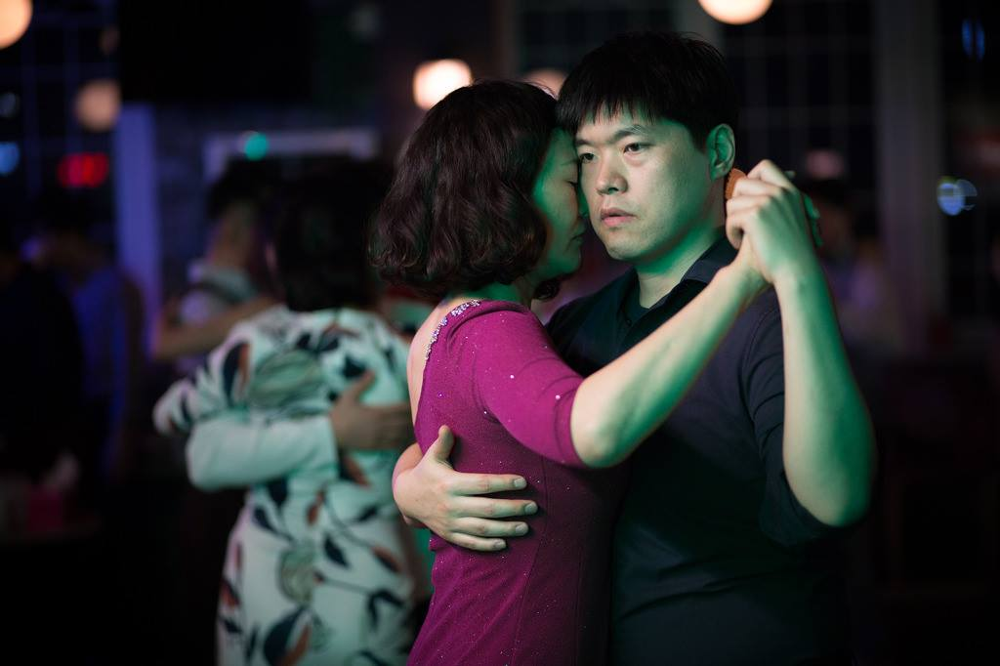

탱고는 겉으로 보기에는 화려해 보이지 않으나 서로 춤을 추는 그 둘안에서는 격정적인 움직임을 서로 주고 받고 있다.
아. 오나다 에서 원없이 달렸다.
추다 쓰러질뻔...
지금까지 소리 중 사람 제일 많았다. 110명쯤 온 듯하다.
에르난님이 빵빵 터지게 만들어 앞 땅게로 와 조금씩 자주 부딪혔지만 그 누구도 기분나빠하지 않았다. 그 음악에는 그렇게 움직일 수 밖에 없었기 때문이다.꼬르띠나 때 사과하는데 .... 감정을 누룰 수 없었음을 이미 서로 알고 있었음